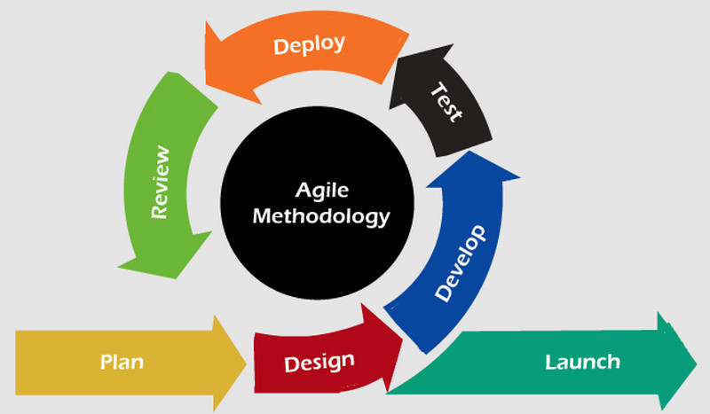

Agile
Agiilne arendusprotsess on projektijuhtimise metoodikate. See seisneb keerukate
projektide jagamises väikesteks ja teostatavateks ülesanneteks. Need ülesanded
määratakse üksikutele meeskondadele.

Agile meetodi etappid:
-
Planeerimine.
-
Disain.
-
Arendus.
-
Testimine.
-
Analüüs.
-
Kasutusele võtmine
-
Avaldamine.
Allikas: www.officetimeline.com